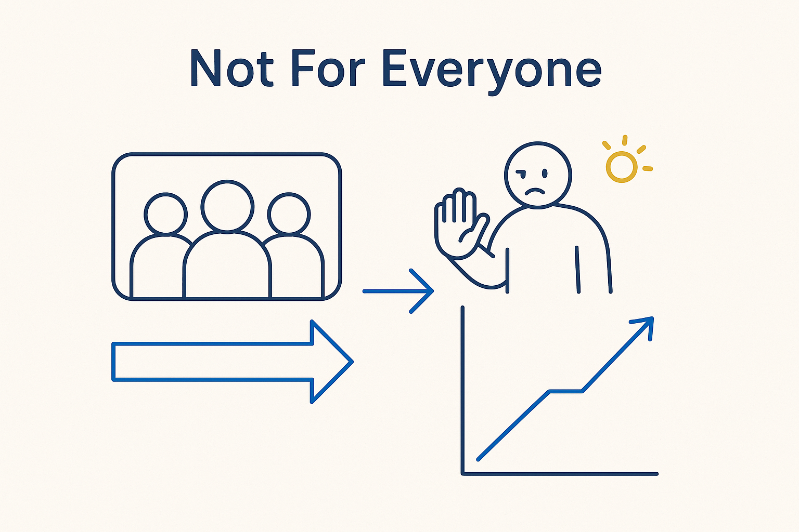

Honest, not elitist: this way of working asks a lot — discipline, focus, energy, a positive professional attitude — and not everyone will want it or be suited to it. Over time the team composition adjusts itself.

> Honest, not elitist: this way of working asks a lot — discipline, focus, energy, a positive professional attitude — and not everyone will want it or be suited to it. Over time the team composition adjusts itself.
Let’s be honest about it. This way of working asks a lot. It takes discipline, focus, real new energy, continuous learning, ownership of your part — and, especially inside large organizations, not everyone will find that comfortable. Some people are happy with the old, low-demand rhythm, and this isn’t that. Pretending everyone will love it would be a sales pitch, not the truth, and the truth serves people better.
It is probably also true that not everyone will be *suited* to it. This isn’t about raw talent or seniority — it is about attitude. It needs people with the right positive, professional attitude: willing to challenge and be challenged, to keep learning, to own outcomes, to do the disciplined thing and still enjoy the work. That attitude can be grown, but it has to be present or chosen; it can’t be faked for long.
The consequence is quiet and self-correcting: over time, the team composition adjusts itself. The people who embrace the discipline and the learning stay and thrive; others gradually move toward work that fits them better. That is not a threat and not elitism — it is what happens when a way of working genuinely asks something of people. Being upfront about it is itself an act of integrity.
And this is, frankly, part of the provocation of BTM. A method that asks for discipline, focus and continuous learning is deliberately uncomfortable — it challenges the low-demand default and the “send them to a workshop and we’re done” habit. Saying out loud that it’s not for everyone is not a hedge; it is the same positive provocation that runs through the whole approach. The breakthrough was never going to come from the comfortable path.
Where it lives: the signature principle of Breakthrough Modeling — honest about what it asks, and who it’s for.